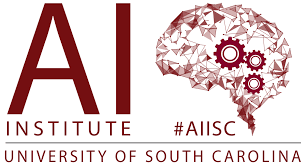
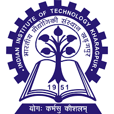
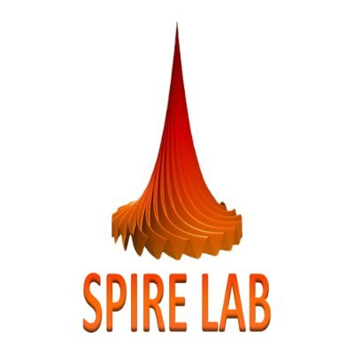
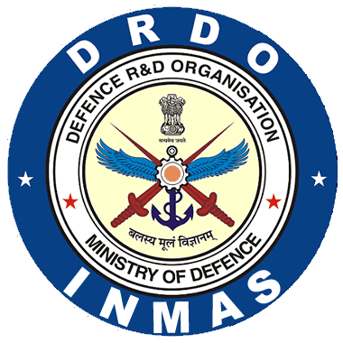
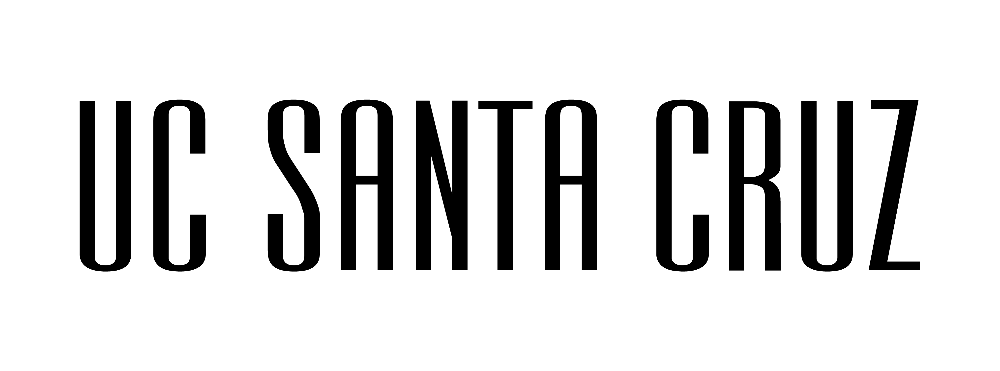

Research Intern
IRT Group, AI Institute of South Carolina | DETONATE Group
Supervisor: Dr. Amit Sheth & Dr. Amitava Das · Feb 2026 – Present
Working on safety alignment of Text-to-Image & T2V diffusion and flow matching models using scene graphs and safety-potential-guided rectified flow matching.
T2I/T2V DiffusionSafety AlignmentFlow Matching

Deep Learning Research Intern
Indian Institute of Technology (IIT) Kharagpur
Supervisor: Dr. Niloy Ganguly · 2025
Developing attribution techniques using Integrated Gradients, Manifold IG, and Guided IG toward neural network interpretability, extending to sequential models and LLMs.
Explainable AIAttribution MethodsLLMs

Machine Learning Research Fellow
SPIRE Lab, Indian Institute of Science
Supervisor: Prof. Prasanta Kumar Ghosh · Jul 2025 – Present
Research on unsupervised speech TSM using VAEs, GANs, diffusion, and flow matching. Implemented and trained DiffATSM, ScalerGAN, TSM-Net, and Neural ATSM from scratch.
Speech ProcessingGANsDiffusion

Machine Learning Research Intern
Institute of Nuclear Medicine and Allied Sciences, DRDO
Supervisor: Dr. Shilpi Modi · 2024
Developed a CNN ResNet model for sEMG stress classification, improving accuracy from 91% to 97.98%, and explored sequence models for generalisation.
Machine LearningCNNsEMG

Statistics Research Intern
University of California Santa Cruz, CA (ISRP)
Supervisor: Prof. Bruno Sansó · 2024
Conducted research in analysis of time-varying quantiles for environmental variables, focusing on Atmospheric Rivers along the California coast.
StatisticsEnvironmental DataTime Series
Machine Learning Intern
RightProfile by Syntellect
Dec 2024 – Present
Part of the research and development team building computer vision and deep learning models to automate image annotation.
Computer VisionObject Detection